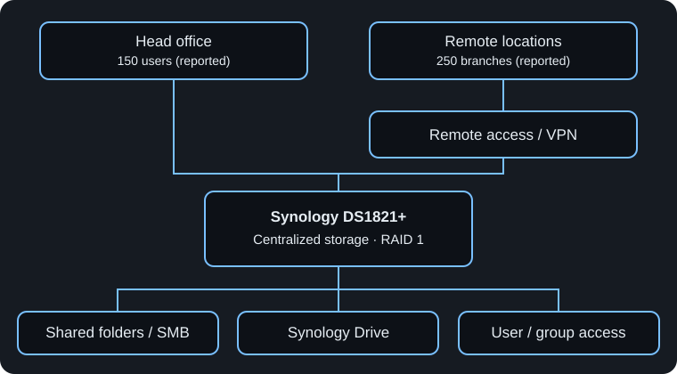

Shared folders & SMB
Centralized file shares for authorized network users.
COMPLETED PROJECT / RETAIL & DISTRIBUTION
Synology DS1821+ · Arjay Datuin · IT Infrastructure
Implemented a Synology DS1821+ network attached storage solution to support centralized business file access in a retail and distribution environment. The reported scope includes 150 head office users and 250 branches. Shared folders, SMB, Synology Drive, VPN-based remote access and user/group permissions form the core of the solution.

Illustrative logical architecture based on the stated features; not an actual network topology.
Centralized file shares for authorized network users.
File access and collaboration capabilities.
Connectivity for authorized remote users and locations.
Access management for shared business files.
The deployment provides a centralized storage platform and multiple methods of authorized file access. Centralized permissions support consistent administration across business operations. Quantified savings, performance improvements and recovery metrics have not been provided.
RAID redundancy is not a substitute for an independent backup. Backup strategy and recovery testing are not documented in this case study.
Project documentation (Markdown)
No internal IP addresses, credentials, company name or operational screenshots are included.
The résumé lists the initial centralized NAS implementation under the 2016–2017 MIS IT Unit Head role, intended to retain copies of files if workstation files became corrupted. The supplied DS1821+ configuration describes the later-reported implementation, not necessarily the hardware deployed in 2016–2017.